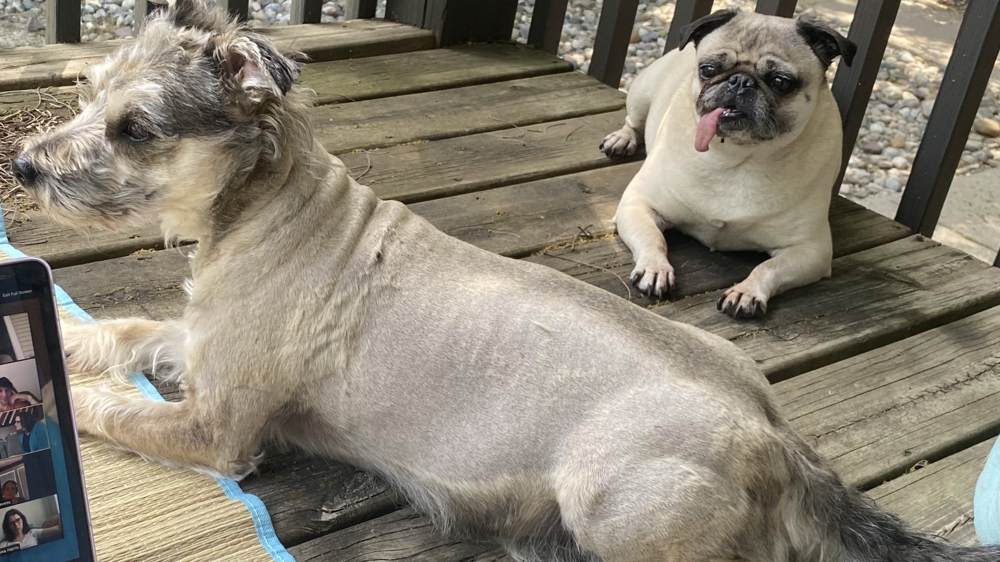

About Me

My dogs, Hiso (right) and Kujo (left).
I'm a third year PhD student at Michigan State University working with Profs. Jay Strader and Laura Chomiuk on accreting low-mass X-ray binairies in Galactic globular clusters. As an undergraduate, I was an AstroCom NYC fellow at The City University of New York at Hunter College and the American Museum of Natural History where I worked on blue stragglers. When I'm not mulling over the universe, I like to annoy my dogs and play roller derby.
Research
 Radio/X-ray Correlation Plot for Accreting Compact Objects by Bahramian et al. 2018.
Radio/X-ray Correlation Plot for Accreting Compact Objects by Bahramian et al. 2018.
I'm an observational astronomer intrested in accreting binary systems with compact objects -- primarily in globular clusters.
I'm currently working on analyzing the radio and X-ray properties of persistently accreting neutron star X-ray binaries to understand the coupling behaviors of their accretion disk and jet.
Contact
Email:panurach@msu.edu
Address: Department of Physics and Astronomy
Michigan State University
Biomedical & Physical Sciences
567 Wilson Rd, Room 3265
East Lansing, MI 48824-2320